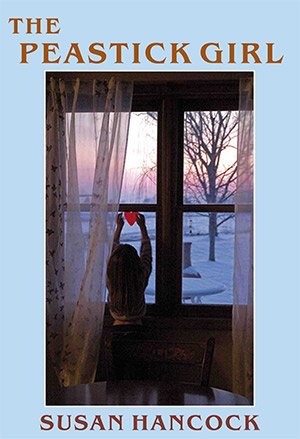
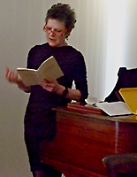

|
|


Peastick Girl : Susan Hancock
{kind=link}

| Australia and New Zealand only Rest of the World |
Book Description
Is she trying to seduce him? He
doesn’t know. Though not exactly distant
she seems far away. The fire they have lit is young-looking, crowned
with green flames; it sends its light onto the red tiles around the
fireplace, each with its upright white lily, like a martyr’s emblem.
The Peastick Girl is a panoramic evocation of Wellington in all its beauty and strangeness and the almost mythic force of the natural world. The novel brings its central character, 27 year old Teresa Matheson, the second of the three Matheson girls, back to Wellington after five years in Australia. Over the course of the winter she begins to write a film version of Webster’s 17th century tragedy, The Duchess of Malfi, not only to set it here but to translate the play’s vision of treachery and destruction into New Zealand terms, linking the characters and events to aspects of New Zealand’s history . The irony is that the strongest link is between the Duchess and Teresa herself. Teresa’s own decline into darkness and a state of tragic fright brings her close to the catastrophe that overtakes Webster’s heroine.
Darkened though this is, much of the novel is also given to a dramatising of a large cast of characters in a comedy of manners involving young feminists who feel they have lost their way, powerful but disenfranchised Maori women who act as a chorus on pakeha behaviour and the past, Russian emigres, Rugby and its players, men in sheds, students in beanies and backpacks, great roaring assemblies in Wellington pubs. Pub life. Literature. Private life. Introversion and loss. Fear of the Matheson girls’ sinister mother, the feminist Vivien who has left her mark ( see Chapter 20, Tattoo) on many of the younger generation even after her early and mysterious death. Family secrets. Broken history. — All these consort in this vivid and ambitious novel of New Zealand life.
A brave, sensuous and wildly
original novel — I’ve never read anything quite like it.
Helen
Garner
Where novels are concerned, a
lot
more attention should be paid to Susan Hancock's 'The
Peastick Girl'.
Written in prose of eloquent intensity, this does for New Zealand
passions and landscapes the kind of thing the Brontës did for Yorkshire.
Chris
Wallace-Crabbe, The Age, 8 December 2012
2012
494 pgs
$49.95 Rest of the World
Back to top
Book Sample
Prologue
You see they were always there, the Red Queen and the Peastick Girl, the Red Queen howling in the wind that came banging up the valley. But the Peastick Girl never made a sound, falling down in the long rows. Here where she was the earth was dark and clogged, the mud soaked her face. Her legs were bent behind her. Over she fell, her little triangular dress with the spot at each corner, like a butterfly’s wing.
Something had happened to the Red Queen that made her howl like that in the air above the sandpit where the tunnel of wood came down. Her eyes bulged, the wind blew her face away. But here where the Peastick Girl lay soon would be green leaves, and the lip-smooth pods. In black empty triangles the peasticks stretched away.
How they first got there no one knew, but no one could remember a time when they weren’t there, the wind blowing, and the Peastick Girl falling down.
Book One : The Dialogue of the Insects
Chapter 1 : Blackbird
Though the sunlight is already brilliant over the front of the house it is the back that interests us more for it is here that the cold is coming from, making its way down the long hall, stealing forwards along the shadowed walls. The small back window over the sink is open; the water lies quiet under a coat of grease, like a wintry pond. Although yesterday it was summer, overnight the autumn has come. And with it comes the past, moving in shadows over the bags and the boxes that are scattered everywhere, rising in cool breezes and eddies of air.
Because of the hill’s steep pitch the house is like a wedge, one-storey at the back, two at the front. A verandah at second floor level crosses the front of the house. Shards of white paint are flaking from its wooden posts, splintering the way frost splinters. From a distance, walking towards the front room all you can see between these posts is the sky. But as you get closer to the window, when you step out onto the worn wooden boards, there is the Harbour, rising almost to eye level, like a curtain of wet light. Below it lies the city, cast in a deep pit of shadow. Lines of sun are snaking in from the eastern ranges and rising up out of the shadow the spires of St Mary of the Angels are rusty in the sunlight, smoking with damp.
You may turn round and face the room through which you have just come. Behind you as you prop yourself on the rail are the dizzying movements of the sky, reflected in the mirror in which you now see yourself. A cloud sails by in the glass. If your dressing gown slips open, for it’s old and the cloth is thin, you may even see a portrait of your own body, a full frontal nude. Your hair, if it is short and fair like that of the girl who now faces herself in this way, stands out in a halo of gold-lit spikes. The thin light fabric of the dressing gown, blue patterned with gold leaves, lifts and stiffens in the wind. As you stand there, looking at the shape of yourself outlined in the mirror, you realise you cannot see the reflection of your face, because of the light. You are seeing yourself as others might see you, a visible mystery.
The girl who stands looking at herself this way is Teresa, younger sister to Mollie, older to Cass. She has come back to New Zealand after five years away. In Australia she has written a book, had a love affair with someone else’s husband and met a demon. It is partly to escape him that she has come back. Does she hope that he will find her? Secretly track her down? Secretly maybe she does - there is nothing like the attentiveness of a demon after all, his eye worming into you. Her flight through twelve hundred miles of air has left a vapour trail twisting like a worm, or the shape of a tornado. In her mind’s eye she sees it shining red-gold, a whole trail leading from her to him.
She tips her head back into the full sun. The sky is a diamond, full of facets, her eyes fill with sharp diamond tears. Air puffs into her face, cold slides and insinuates itself under her dressing gown, feels her breast, drapes its arm round her neck, fingers her hair. On the lip of the gutter above her a bird stands still as a cut-out, its chest feathers rosy. It flips away, wafting across the valley, then arrives on the roof of another house, whose perfect diagonals are shining in the sun. Behind the house a magpie slowly climbs the cold hill of air.
Oh the air, the air, pure and clear the air is like music, the starlings rattle on the thin tin roof, the white shards of paint rustle, the verandah, a pathway of boards hangs onto the sky itself, its blue support. Wintry pangs of light wink from the water and answering them from every corner and angle of the hillside windows of light wink back. Another bird flies from the lip of the gutter and swings away.
Although it is still early there are people about, making their way along the damp black paths that line the hill. Those who know who she is glance up, then look away, keeping their conversations discreet, wondering what it must be like to be someone so different from themselves. Seen from a distance, in the circles of light and birds, she seems to be walking the sky. But they soon forget, making their own way along and down the hill, for the roads are shining like rivers and the wind comes in. And now as she leans both arms on the cold rail, as she almost sees the wind moving towards her from the mountains, as she watches it tossing the gardens of the houses spread out below, she almost forgets, herself.
Below her the front of the house drops thirty feet into the steep garden. The poor leafless tree that leans in from the bank nods at her its poor old head, old woman tree, sad thing, its branches a few sparse strands. Old women in homes nod their trembling heads, waiting for the tea-trolley. The wind, wandering along the front of the house comes in fits and starts. In the stronger gusts the whole tree sighs.
And now the wind is picking up. It shakes the tree woven with a mat of creeper that grows in under the shelter of the house. It tosses the clump of dahlias standing in a little patch of sun. The air is so clear that you can see the worm casts in the grass. And there, spread-eagled on the convolvulus that waves its tendrils all over the top of the tree is Jake’s jersey, forgotten from yesterday, spangled with damp. Above it and across it the bees travel in and out of the purple trumpets, great black and yellow striped bodies with their blundering hum, their dark legs working, their spiny hair covered with pollen, for they are always busy in the sunlight, the bees.
Back to top
Reviews
The Peastick Girl
Michelle Austin
Transnational Literature, Vol. 6, No. 1, November 2013
Susan
Hancock’s novel is a rich and complex work that incorporates themes of
feminism, national identity and transnational socio-politics into a
hugely compelling narrative framework. Set in Wellington, New Zealand,
the story concerns Teresa, Mollie and Cass Matheson, the three
daughters of the mysteriously deceased Vivien Matheson. Each of these
three main characters has their own distinct identity but,
collectively, the strong and sometimes endearing characterisation works
to construct a positive image of women and sisterhood.
The middle sister, Teresa, is given the central role, returning from Australia, where she has been living for five years and where she believes she has discovered a demon called Arkeum. Teresa’s return opens the narrative and her emotions are the driving force of the plot as she is shown to be a troubled figure who has suffered a traumatic experience that has left her psychologically and physically damaged. On returning home she is able to resolve some of the tensions in her family and to discover the secrets kept from her by her mother which have, unknown to her, continued to affect her throughout the rest of her life. The events of her past slowly return to haunt her during the course of this discovery as she struggles to resolve an intense psychological division between her angry and seizure riddled Red Queen persona, and her other, innocent and more fragile self, the Peastick Girl.
One of the wonderful points of this story is the way that the natural beauty of Teresa’s homeland is able to heal and soothe her at a tumultuous point in her life. Nature is an important motif in this novel and the descriptions of the country occur in connection with peaceful scenes to offset Teresa’s emotional state of disturbance and unrest. This complex relationship between the natural world and the emotional and social disturbance of otherwise peaceful people, then, has parallels with the social and semi-political issues that appear subtly but noticeably in the background of the novel. This is interjected with specific debates concerning the plight of Maori women and the need for them to regain the power that was stripped from them under British law. The Maori issue is conjoined with the idea of natural and native New Zealand life, while the contrasts and affinities between the novel’s main characters and the more peripheral figures of Maori women are shown to be of principal importance for reasons concerning both feminism and nationality. Cass is a filmmaker whose most recent project is a film about the Maori people. She is the figure to whom the author assigns the responsibility of reminding her two sisters about the feminism with which their mother raised them. She is also the character who continually asks important questions about women’s treatment of each other and the meaning of feminism and femaleness in contemporary society.
In outlining some of the problems caused by colonisation, Hancock’s novel makes key reference to New Zealand’s political and social history and considers the effect of this on Maori women within the more established white Western women’s movement. The novel positions this issue in order to suggest that colonisation and the subsequent imposition of British, and largely Victorian, values concerning marriage, morality and gender roles has had adverse effects on the position and rights of all New Zealand born women.
At the same time, the male attitudes to women in this novel, though few, are shown to be less than egalitarian. Teresa, for example, is harshly criticised by Gil, the philandering but prudish husband of her older sister, Mollie. He makes sporadic and multifarious judgements in relation to her attitude to life, her previous experiences with drugs and what he sees as her sexual promiscuity, thereby demonstrating one male perspective on the moral and largely gender specific values to which women are still expected to adhere. Mollie offers a contrast to Teresa’s freer and more adventurous persona, being described as a housewife and mother whose opinions are, in some ways, informed and confined by her husband’s patriarchal and occasionally hypocritical values.
The problems of women, and the constriction that they feel, come to the forefront here, lending the novel a sympathetic tone which inspires a similarly sisterly affinity and understanding in the reader. It is this that makes the novel such a pleasure to read as it is so clearly female orientated and provides a warm and enveloping story with enough mystery at its heart to make it absorbing and enjoyable. The narrative tone engages the reader and inspires the imagination in such a way that scenes and characters come to life. Its overall effect is, therefore, a powerful one, working to promote understanding of the distinctive identity of New Zealand and its people while at the same time encouraging readers to discover more about the country and its history.
The middle sister, Teresa, is given the central role, returning from Australia, where she has been living for five years and where she believes she has discovered a demon called Arkeum. Teresa’s return opens the narrative and her emotions are the driving force of the plot as she is shown to be a troubled figure who has suffered a traumatic experience that has left her psychologically and physically damaged. On returning home she is able to resolve some of the tensions in her family and to discover the secrets kept from her by her mother which have, unknown to her, continued to affect her throughout the rest of her life. The events of her past slowly return to haunt her during the course of this discovery as she struggles to resolve an intense psychological division between her angry and seizure riddled Red Queen persona, and her other, innocent and more fragile self, the Peastick Girl.
One of the wonderful points of this story is the way that the natural beauty of Teresa’s homeland is able to heal and soothe her at a tumultuous point in her life. Nature is an important motif in this novel and the descriptions of the country occur in connection with peaceful scenes to offset Teresa’s emotional state of disturbance and unrest. This complex relationship between the natural world and the emotional and social disturbance of otherwise peaceful people, then, has parallels with the social and semi-political issues that appear subtly but noticeably in the background of the novel. This is interjected with specific debates concerning the plight of Maori women and the need for them to regain the power that was stripped from them under British law. The Maori issue is conjoined with the idea of natural and native New Zealand life, while the contrasts and affinities between the novel’s main characters and the more peripheral figures of Maori women are shown to be of principal importance for reasons concerning both feminism and nationality. Cass is a filmmaker whose most recent project is a film about the Maori people. She is the figure to whom the author assigns the responsibility of reminding her two sisters about the feminism with which their mother raised them. She is also the character who continually asks important questions about women’s treatment of each other and the meaning of feminism and femaleness in contemporary society.
In outlining some of the problems caused by colonisation, Hancock’s novel makes key reference to New Zealand’s political and social history and considers the effect of this on Maori women within the more established white Western women’s movement. The novel positions this issue in order to suggest that colonisation and the subsequent imposition of British, and largely Victorian, values concerning marriage, morality and gender roles has had adverse effects on the position and rights of all New Zealand born women.
At the same time, the male attitudes to women in this novel, though few, are shown to be less than egalitarian. Teresa, for example, is harshly criticised by Gil, the philandering but prudish husband of her older sister, Mollie. He makes sporadic and multifarious judgements in relation to her attitude to life, her previous experiences with drugs and what he sees as her sexual promiscuity, thereby demonstrating one male perspective on the moral and largely gender specific values to which women are still expected to adhere. Mollie offers a contrast to Teresa’s freer and more adventurous persona, being described as a housewife and mother whose opinions are, in some ways, informed and confined by her husband’s patriarchal and occasionally hypocritical values.
The problems of women, and the constriction that they feel, come to the forefront here, lending the novel a sympathetic tone which inspires a similarly sisterly affinity and understanding in the reader. It is this that makes the novel such a pleasure to read as it is so clearly female orientated and provides a warm and enveloping story with enough mystery at its heart to make it absorbing and enjoyable. The narrative tone engages the reader and inspires the imagination in such a way that scenes and characters come to life. Its overall effect is, therefore, a powerful one, working to promote understanding of the distinctive identity of New Zealand and its people while at the same time encouraging readers to discover more about the country and its history.
Back to top
The Peastick Girl
Rod Edmond
Emeritus Professor of Modern Literature and Cultural History - University of Kent
New Zealand Studies Network (UK), 22 February 2013
Early
in this novel someone remarks to its central protagonist that New
Zealand is ‘a hard country to come back to’. Teresa Matheson has
returned to Wellington after five years living in Melbourne and bought
herself a house on the heights above the city within sight of her dead
mother’s old home. The opening pages are both vertiginous and
claustrophobic. Teresa is left dangling from a wooden ladder hanging
from her veranda; she climbs to a ridge behind her house from where she
can see both city and ocean and becomes trapped in a maze of gorse as
she descends. She feels disconnected from her sisters, Mollie and Cass,
and is troubled by Hugo whose former friendship with her mother
provokes unease and a feeling there are disturbing things in her past
that she knows nothing of. As she says to Mollie: ‘I’m here but I’m not
really back; maybe you can’t get back.’
So far so familiar: the problems of returning and settling, and the questions of identity and selfhood that follow from this. But The Peastick Girl has an intensity and strangeness unusual in such ‘return of the native’ narratives. Teresa’s problems are not those of social or cultural adjustment. Indeed, apart from odd moments of near-slapstick about the curious habits of young New Zealand males, the novel is pretty free of contemporary social comment or satire. Wellington is as central to this novel as Egdon Heath is to Hardy’s Return of the Native, but it is a city empty of people other than the small cast of characters who are forever meeting or glimpsing each other as they traverse its streets. Katherine Mansfield’s city has become a wild place dominated by rain, light, wind and sound. Teresa’s house is a permeable membrane open to all weathers, a mere shack whose roof leaks and windows blow in, and through which disturbing memories swirl.
Hancock is running an elaborate parallel between the landscapes of the city and the mindscapes of her protagonist. As in Hopkins’s sonnet ‘No worst, there is none’, the mind ‘has mountains; cliffs of fall / Frightful, sheer, no-man-fathomed’. Teresa has an intensely close relation to the natural world, preferring to be outside than in, always thinly clad, impervious to the cold and wet that persist through most the novel. This dramatises her precarious state of mind and provides both comfort and escape from whatever it is that haunts her.
The most ambitious level of the novel is the parallel it attempts between the dislocation of its protagonist and the history of New Zealand since colonisation. ‘This whole country is a lie’, Teresa remarks to Hugo; ‘We signed up a Treaty in which we described ourselves as allies of a sovereign people, and then we broke it’. The novel is haunted by the idea of treachery. As a consequence, no one is at home: ‘This was an empty country. Nobody had really written on it yet; a few furrows, sheep tracks, the scribbling of the wind’, Teresa reflects. I was reminded of the words scrawled across Colin McCahon’s ‘Northland Panels’: ‘a landscape with too few lovers.’
Teresa’s eventual lover and perhaps rescuer, Nikolai, is a Russian émigré, one of a shadowy group which inhabits the margins of the novel. Nikolai tells Teresa; ‘You are like us... you haven’t really got here yet, you haven’t really arrived’. Pakeha New Zealanders in this novel are unable to help each other. In Wellington they live dotted around the hills of the city, facing each other but apart. The feminist group, which Cass is part of, splinters once its Maori members leave. A women’s party at Mollie’s house on the Kapiti coast is not a sisterly occasion. In another scene, people gather on the beach at Makora at dusk but soon three separate fires have been lit; ‘the result of three different decisions, and disputes about the cooking and general organization of the event were turning into the event itself’. There are a number of these social gatherings punctuating the novel but none ends, as say Mrs Ramsey’s dinner in To the Lighthouse, or the assembly in the round shell house at the end of the bone people does, in harmony or reconciliation.
Both Teresa and her country are shown as suffering the consequences of an original trauma from which all subsequent pain and dislocation has followed. The place of Maori themselves in this is unclear. Their representative in The Peastick Girl is Rangi, an unsatisfactory character often seen standing on headlands looking out to sea or heard making gnomic utterances. Although by the end of the novel Teresa, having learnt the terrible secret of her past, has glimpsed a possibility of how she might begin to heal, no such hope is held out for a country as unsettled and broken as New Zealand. Help, if that is what Teresa has found, begins in a deserted farmhouse in the shadow of Mt Taranaki, far away from the entanglements of family and the anomic life of the city.
This account of the novel makes it seem thinner and more schematic than it is. The Peastick Girl is dense, rich, lyrical and engulfing. It pulls you in and has its way with you, brushing aside critical objections as it does. Much of its success is technical. The writing is poetic and elaborate but also very precise, repeatedly surprising in its effects, with remarkably few false notes. Teresa’s is the dominant consciousness but the point of view often shifts to other characters, and between past and present, in a manner that can momentarily wrong-foot the reader but which suits a work in which time streams rather than ticks.
Hancock is a very literary writer with a playful sense of the traditions of the novel as a form. Although the shifts in point-of-view are normally unannounced, at one point, in mock deference to the limits of the realist mode in making such switches, a third-person narrator declares: ‘And here, as he stands behind her... we will leave him and begin to consider this scene so far from her point of view’. Teresa, herself a writer though little is made of this, plans to adapt The Duchess of Malfi for a New Zealand context. Chapter 10, ‘Hugo at the Newspaper Office, Aeolus, the Cave of the Winds’ refers to Joyce’s Ulysses and Odysseus’s encounter with the wind-god in the tenth book of The Odyssey. And so on.
There is nothing heavy-handed about this literary referencing. In some ways The Peastick Girl is an almost offhand novel. Characters arrive unannounced and for no good reason other than the author needs them at that moment. Characters who are no longer needed simply fail to reappear. A vivid scene involving an exhilarating motorbike ride over the Rimutakas has no obvious purpose but I’m glad it’s there. Hancock pays no respect to those conventions of the form that require the author to take pains in moving a character from one place to another, or explain how it is that X knows Y. Instead she creates a fictional world as phantasmagoric as it is real, and none the less real for that.
This indeterminacy, however, creates a problem of how to end the novel. In part a mystery, only part of that mystery has been revealed by the novel’s close; other secrets hinted at remain undisclosed; loose ends dangle. Perhaps this is wise. A profound mystery always creates expectations that its solution must disappoint. On the other hand, when a mystery has helped propel a novel it is frustrating to find it left partly unresolved. Hancock’s solution of this problem is to conclude the narrative with the words, ‘To be continued.’ The full-stop is teasing, and the words can mean either there is a further volume to follow, or as I think more likely, that this is a story without end.
This is hardly a criticism. As I said, The Peastick Girl disarms most objections. It is one of those infrequent new New Zealand novels – Eleanor Catton’s The Rehearsal (2008) is another – that really is new.
So far so familiar: the problems of returning and settling, and the questions of identity and selfhood that follow from this. But The Peastick Girl has an intensity and strangeness unusual in such ‘return of the native’ narratives. Teresa’s problems are not those of social or cultural adjustment. Indeed, apart from odd moments of near-slapstick about the curious habits of young New Zealand males, the novel is pretty free of contemporary social comment or satire. Wellington is as central to this novel as Egdon Heath is to Hardy’s Return of the Native, but it is a city empty of people other than the small cast of characters who are forever meeting or glimpsing each other as they traverse its streets. Katherine Mansfield’s city has become a wild place dominated by rain, light, wind and sound. Teresa’s house is a permeable membrane open to all weathers, a mere shack whose roof leaks and windows blow in, and through which disturbing memories swirl.
Hancock is running an elaborate parallel between the landscapes of the city and the mindscapes of her protagonist. As in Hopkins’s sonnet ‘No worst, there is none’, the mind ‘has mountains; cliffs of fall / Frightful, sheer, no-man-fathomed’. Teresa has an intensely close relation to the natural world, preferring to be outside than in, always thinly clad, impervious to the cold and wet that persist through most the novel. This dramatises her precarious state of mind and provides both comfort and escape from whatever it is that haunts her.
The most ambitious level of the novel is the parallel it attempts between the dislocation of its protagonist and the history of New Zealand since colonisation. ‘This whole country is a lie’, Teresa remarks to Hugo; ‘We signed up a Treaty in which we described ourselves as allies of a sovereign people, and then we broke it’. The novel is haunted by the idea of treachery. As a consequence, no one is at home: ‘This was an empty country. Nobody had really written on it yet; a few furrows, sheep tracks, the scribbling of the wind’, Teresa reflects. I was reminded of the words scrawled across Colin McCahon’s ‘Northland Panels’: ‘a landscape with too few lovers.’
Teresa’s eventual lover and perhaps rescuer, Nikolai, is a Russian émigré, one of a shadowy group which inhabits the margins of the novel. Nikolai tells Teresa; ‘You are like us... you haven’t really got here yet, you haven’t really arrived’. Pakeha New Zealanders in this novel are unable to help each other. In Wellington they live dotted around the hills of the city, facing each other but apart. The feminist group, which Cass is part of, splinters once its Maori members leave. A women’s party at Mollie’s house on the Kapiti coast is not a sisterly occasion. In another scene, people gather on the beach at Makora at dusk but soon three separate fires have been lit; ‘the result of three different decisions, and disputes about the cooking and general organization of the event were turning into the event itself’. There are a number of these social gatherings punctuating the novel but none ends, as say Mrs Ramsey’s dinner in To the Lighthouse, or the assembly in the round shell house at the end of the bone people does, in harmony or reconciliation.
Both Teresa and her country are shown as suffering the consequences of an original trauma from which all subsequent pain and dislocation has followed. The place of Maori themselves in this is unclear. Their representative in The Peastick Girl is Rangi, an unsatisfactory character often seen standing on headlands looking out to sea or heard making gnomic utterances. Although by the end of the novel Teresa, having learnt the terrible secret of her past, has glimpsed a possibility of how she might begin to heal, no such hope is held out for a country as unsettled and broken as New Zealand. Help, if that is what Teresa has found, begins in a deserted farmhouse in the shadow of Mt Taranaki, far away from the entanglements of family and the anomic life of the city.
This account of the novel makes it seem thinner and more schematic than it is. The Peastick Girl is dense, rich, lyrical and engulfing. It pulls you in and has its way with you, brushing aside critical objections as it does. Much of its success is technical. The writing is poetic and elaborate but also very precise, repeatedly surprising in its effects, with remarkably few false notes. Teresa’s is the dominant consciousness but the point of view often shifts to other characters, and between past and present, in a manner that can momentarily wrong-foot the reader but which suits a work in which time streams rather than ticks.
Hancock is a very literary writer with a playful sense of the traditions of the novel as a form. Although the shifts in point-of-view are normally unannounced, at one point, in mock deference to the limits of the realist mode in making such switches, a third-person narrator declares: ‘And here, as he stands behind her... we will leave him and begin to consider this scene so far from her point of view’. Teresa, herself a writer though little is made of this, plans to adapt The Duchess of Malfi for a New Zealand context. Chapter 10, ‘Hugo at the Newspaper Office, Aeolus, the Cave of the Winds’ refers to Joyce’s Ulysses and Odysseus’s encounter with the wind-god in the tenth book of The Odyssey. And so on.
There is nothing heavy-handed about this literary referencing. In some ways The Peastick Girl is an almost offhand novel. Characters arrive unannounced and for no good reason other than the author needs them at that moment. Characters who are no longer needed simply fail to reappear. A vivid scene involving an exhilarating motorbike ride over the Rimutakas has no obvious purpose but I’m glad it’s there. Hancock pays no respect to those conventions of the form that require the author to take pains in moving a character from one place to another, or explain how it is that X knows Y. Instead she creates a fictional world as phantasmagoric as it is real, and none the less real for that.
This indeterminacy, however, creates a problem of how to end the novel. In part a mystery, only part of that mystery has been revealed by the novel’s close; other secrets hinted at remain undisclosed; loose ends dangle. Perhaps this is wise. A profound mystery always creates expectations that its solution must disappoint. On the other hand, when a mystery has helped propel a novel it is frustrating to find it left partly unresolved. Hancock’s solution of this problem is to conclude the narrative with the words, ‘To be continued.’ The full-stop is teasing, and the words can mean either there is a further volume to follow, or as I think more likely, that this is a story without end.
This is hardly a criticism. As I said, The Peastick Girl disarms most objections. It is one of those infrequent new New Zealand novels – Eleanor Catton’s The Rehearsal (2008) is another – that really is new.
Back to top
The Peastick Girl by Susan Hancock
Lisa Hill
ANZ LitLovers LitBlog, 6 October 2012
Back to top
Bookish and Awkward book review
Lucinda, Time Out Bookshop (Mt Eden)
1 August 2012, George FM (Auckland)
http://www.georgefm.co.nz/Best-Of-Wednesday-Breakfast-with-KirstDean-aka-The-Eens/
tabid/127/articleID/116363/Default.aspx
Today we’re talking about The Peastick
Girl by
Susan Hancock, published out of Australia but written by an ex-pat Kiwi
writer, am I right?
That’s right, it’s published by a really small company in Melbourne but it’s available in New Zealand, readily available.
So it really is quite important that it’s written by an Australian I think, by an Australian-New Zealander, because it’s all about the New Zealand landscape and its effect on people. It’s set in Wellington and Wellington features almost like a character in it. It’s just incredibly Gothic and it’s got all these descriptions of the weather and the wind sweeping across the harbour and all the people in it are quite troubled and Gothic as well. It’s really beautiful.
I really enjoy it when you get a sense of place in a book like that.
Yes, absolutely. And I’m actually from Wellington so I felt really nostalgic while I was reading it, and it’s pretty much spot on. It’s all about youngish people making their way as well, so there’s lots to identify with.
And so, key things, without giving too much away?
Okay, so it’s basically the story of this young woman called Teresa Matheson and like Hancock she’s been living in Melbourne. She comes back to Wellington to live and what’s basically happened is that her mother has died in mysterious circumstances out on the harbour in a boat. So it’s all very mysterious when you first get into the book, and she’s got two other sisters and they’re all just trying to find their way and find their paths in life and Teresa is in the throes of a mental breakdown, so there’s a lot of madness and hallucination in big empty Wellington villas. So it’s pretty good. I’m a really big fan, I just loved it, I think it’s beautiful.
It’s good to hear a ringing endorsement from you, especially someone that like you say has been a Wellington resident, so you know they weren’t messing about!
That’s right, it’s published by a really small company in Melbourne but it’s available in New Zealand, readily available.
So it really is quite important that it’s written by an Australian I think, by an Australian-New Zealander, because it’s all about the New Zealand landscape and its effect on people. It’s set in Wellington and Wellington features almost like a character in it. It’s just incredibly Gothic and it’s got all these descriptions of the weather and the wind sweeping across the harbour and all the people in it are quite troubled and Gothic as well. It’s really beautiful.
I really enjoy it when you get a sense of place in a book like that.
Yes, absolutely. And I’m actually from Wellington so I felt really nostalgic while I was reading it, and it’s pretty much spot on. It’s all about youngish people making their way as well, so there’s lots to identify with.
And so, key things, without giving too much away?
Okay, so it’s basically the story of this young woman called Teresa Matheson and like Hancock she’s been living in Melbourne. She comes back to Wellington to live and what’s basically happened is that her mother has died in mysterious circumstances out on the harbour in a boat. So it’s all very mysterious when you first get into the book, and she’s got two other sisters and they’re all just trying to find their way and find their paths in life and Teresa is in the throes of a mental breakdown, so there’s a lot of madness and hallucination in big empty Wellington villas. So it’s pretty good. I’m a really big fan, I just loved it, I think it’s beautiful.
It’s good to hear a ringing endorsement from you, especially someone that like you say has been a Wellington resident, so you know they weren’t messing about!
Back to top
Moody Inner Landscapes
Felicity Plunkett
(Poetry Editor, University of Queensland Press)
23 June 2012, The Canberra Times
Susan
Hancock’s debut novel is ambitious and extraordinary. Composed of four
books with poetic titles such as ‘Dialogue of the Insects’ and ‘The
Book of the Duchess’ and wrapped in a fantastical prologue and ‘end
page’, the novel ends with the words ‘to be continued’. It traces the
story of Teresa Matheson, returning from Australia to her native New
Zealand (where Hancock herself was born), to her sisters Mollie and
Cass and to questions of self, solitude and origin.
Hancock’s descriptions of landscape are elaborate and lush, taking in the physical and metaphysical. In a kind of pathetic fallacy, the landscape around Teresa seems troubled, vexed by storms or shimmering in the wake of trauma. The harbour rises ‘like a curtain of wet light’ and church spires ‘are rusty in the sunlight, smoking with damp’. At one stage characters walk ‘into an extraordinary moment where the garden sprang deep globes of blue fruit’. This is glossed: ‘For it was as though someone was shining a mirror on the sea whose reflection, lucent, trembling, burning an intense and windless blue rose like an angled plane and flooded the garden in a deep luminous atmosphere.’
The density of these descriptions creates a landscape richly layered with the fabulous, the remembered and the imagined. At times elaboration results in fresh illuminations, such as when Mollie’s (rather pompous) husband Gil is described as speaking to her ‘in the almost priestly intonation, sacerdotal, hieratic, that can govern, at certain moments, the marital antiphon’. It requires patience (and a willingness to consult the dictionary) to stay with such writing, which sometimes threatens to overwhelm other aspects of the novel, such as plot.
Conventional plot, though, is not Hancock’s primary concern. At times a sudden authorial voice tears through the narrative fabric to show its seams. ‘There are scenes here we have to leave out’ is a typical intervention. Conventional plot is examined, too, by Hancock’s protagonists, especially Teresa. In ‘The Book of the Duchess’, Teresa’s emotional and mental crisis is channelled through her decision to write a screenplay of John Webster’s 17th-century play The Duchess of Malfi as a New Zealand tragedy. As Teresa writes, her own voice and that of the duchess - one of the most troubled and haunted figures in literature - merge and she lurches in and out of what might be thought of as reality. Yet ‘reality’, too, may be a construct, and if so, it is one her characters examine closely. With the exception of Mollie, newly pregnant and chasing a particularly active small child and his brother, none of the characters seems to have much to do besides reflect. This is a significant luxury, though no one seems at all comfortable within it. The novel’s episodes are intense, its characters impassioned and often agonised. The sisters’ reactions to their mother’s mysterious history shape their lives, especially their romantic lives.
Central to the novel is Teresa’s relationship with Hugo, variously described as looking like (dark, craggily handsome) Ted Hughes and (fair, boyishly handsome) Rupert Penny-Jones. Hugo’s first lover was the girls’ mother, and although he appears to be in love with Teresa, more striking is the dramatic intensity of their wounding encounters. At one point, visiting Mollie and Gil for dinner, Teresa and Hugo are outside engaged in passionate debate, while their hosts watch them from inside. The sense of performance is clear, though the incident results in an exacerbation of Teresa’s mental and emotional symptoms.
The novel’s scale and scope are Joycean, and its venturing into character’s heads is reminiscent of a Modernist concern with charting human cognitive processes. The turmoil of the women’s experiences gives the novel a brooding inner landscape to match its fractured portrait of a moody Wellington. Questions of national reconciliation and the revelation of personal secrets underpin a novel more concerned with language than with conventional narrative, or its resolution.
Hancock’s descriptions of landscape are elaborate and lush, taking in the physical and metaphysical. In a kind of pathetic fallacy, the landscape around Teresa seems troubled, vexed by storms or shimmering in the wake of trauma. The harbour rises ‘like a curtain of wet light’ and church spires ‘are rusty in the sunlight, smoking with damp’. At one stage characters walk ‘into an extraordinary moment where the garden sprang deep globes of blue fruit’. This is glossed: ‘For it was as though someone was shining a mirror on the sea whose reflection, lucent, trembling, burning an intense and windless blue rose like an angled plane and flooded the garden in a deep luminous atmosphere.’
The density of these descriptions creates a landscape richly layered with the fabulous, the remembered and the imagined. At times elaboration results in fresh illuminations, such as when Mollie’s (rather pompous) husband Gil is described as speaking to her ‘in the almost priestly intonation, sacerdotal, hieratic, that can govern, at certain moments, the marital antiphon’. It requires patience (and a willingness to consult the dictionary) to stay with such writing, which sometimes threatens to overwhelm other aspects of the novel, such as plot.
Conventional plot, though, is not Hancock’s primary concern. At times a sudden authorial voice tears through the narrative fabric to show its seams. ‘There are scenes here we have to leave out’ is a typical intervention. Conventional plot is examined, too, by Hancock’s protagonists, especially Teresa. In ‘The Book of the Duchess’, Teresa’s emotional and mental crisis is channelled through her decision to write a screenplay of John Webster’s 17th-century play The Duchess of Malfi as a New Zealand tragedy. As Teresa writes, her own voice and that of the duchess - one of the most troubled and haunted figures in literature - merge and she lurches in and out of what might be thought of as reality. Yet ‘reality’, too, may be a construct, and if so, it is one her characters examine closely. With the exception of Mollie, newly pregnant and chasing a particularly active small child and his brother, none of the characters seems to have much to do besides reflect. This is a significant luxury, though no one seems at all comfortable within it. The novel’s episodes are intense, its characters impassioned and often agonised. The sisters’ reactions to their mother’s mysterious history shape their lives, especially their romantic lives.
Central to the novel is Teresa’s relationship with Hugo, variously described as looking like (dark, craggily handsome) Ted Hughes and (fair, boyishly handsome) Rupert Penny-Jones. Hugo’s first lover was the girls’ mother, and although he appears to be in love with Teresa, more striking is the dramatic intensity of their wounding encounters. At one point, visiting Mollie and Gil for dinner, Teresa and Hugo are outside engaged in passionate debate, while their hosts watch them from inside. The sense of performance is clear, though the incident results in an exacerbation of Teresa’s mental and emotional symptoms.
The novel’s scale and scope are Joycean, and its venturing into character’s heads is reminiscent of a Modernist concern with charting human cognitive processes. The turmoil of the women’s experiences gives the novel a brooding inner landscape to match its fractured portrait of a moody Wellington. Questions of national reconciliation and the revelation of personal secrets underpin a novel more concerned with language than with conventional narrative, or its resolution.
Back to top
The Peastick Girl
Owen Richardson
16 June 2012, The Age
Theresa
has returned from Melbourne to her sisters in Wellington, partly to get
away from her Russian boyfriend and his strange theories about the
devil he thinks she has hovering about her. It’s a haunted milieu:
Theresa’s mother died in mysterious circumstances some years before and
her younger sister Cass also has a trauma in her past; there is also
the question of Hugo, a friend to all the women whose exact
relationship with their mother is hidden from them.
A brief summary can’t really do justice to the complexities of this highly gifted novel. Outside the family drama there are the historical wounds inflicted on the Maori by the pakeha, and the debates around the feminist magazine Cass works on, and the meeting of race and gender politics represented by Rangi; Hancock roams around the pubs and newspaper offices and university campuses.
And all this is given a lustre and intensity by her precise, musical prose, with its matchless evocations of the weather and the landscapes around Wellington and the fugitive subtleties of her characters’ inner lives. Hancock doesn’t like to spell things out; you have to be patient with this book and sometimes allow yourself to not be sure where it’s going. It’s her purpose not to tie everything up neatly and there are plot strands and themes that aren’t resolved. Tidy-minded readers may baulk at this, but it gives a sense that there is much more to this world and these characters than can easily be pinned down. The last words are ‘To Be Continued’.
A brief summary can’t really do justice to the complexities of this highly gifted novel. Outside the family drama there are the historical wounds inflicted on the Maori by the pakeha, and the debates around the feminist magazine Cass works on, and the meeting of race and gender politics represented by Rangi; Hancock roams around the pubs and newspaper offices and university campuses.
And all this is given a lustre and intensity by her precise, musical prose, with its matchless evocations of the weather and the landscapes around Wellington and the fugitive subtleties of her characters’ inner lives. Hancock doesn’t like to spell things out; you have to be patient with this book and sometimes allow yourself to not be sure where it’s going. It’s her purpose not to tie everything up neatly and there are plot strands and themes that aren’t resolved. Tidy-minded readers may baulk at this, but it gives a sense that there is much more to this world and these characters than can easily be pinned down. The last words are ‘To Be Continued’.
Back to top
Q & A
Sue Hancock
NO (online NZ magazine), May 2012
http://www.nomagazine.co.nz/good/sue-hancock-qa
An
absorbing story of youth, secrets, nature and the agony of
relationships, brand new novel The
Peastick Girl has just hit the shelves here in NZ. NO tracked down its
author, award-laden Kiwi writer and citizen-of-the-world Susan Hancock,
for a peep inside her clever head.
Could you explain the title of your latest novel?
One of my readers wrote to me and said he couldn’t put the book down, that he read it in two great gasps, but that he still never understood the first page. Everyone always says ‘The what?’ when they hear the title, and I always say, ‘It’s explained on the first page.’
It’s about a split in the personality of one of the three sisters; in the book you find out why it happened and who it happened to. Basically there are two magical figures who inhabit one of the characters, the Red Queen - who rages and howls in the wind
- and the silent and fragile girl who is kind of like a cabbage butterfly fluttering over the peas that are growing up the peastick frames. She is much closer to the natural world than she is to human life, and it’s her love of beauty that saves her.
What initially inspired the book?
This novel started out as a single image of three sisters sitting on a beach on the Kapiti coast, one warm summer evening. (So it obviously wasn’t last summer.) I had a sense of the three of them right away, even their names, though it took a while for their surname to float into my mind. So the novel started with the characters, not really with an idea or a plot. I always feel as if I met them rather than invented them - Mollie, Teresa and Cass, sitting on the beach under a sky as blue as any remembered sky ever is, with the light of the sea playing up into it.
How will young New Zealanders identify with the central characters?
I think we come from a fantastic country. And I think New Zealanders, especially the savvy generation who are in their twenties and thirties now (the age of most of this novel’s characters) know this. We know how remarkable it is out here; we see our country through the eyes of people who travel here; we know how independent our culture is and we know how to live a metropolitan life. There’s a lot of activity in this book - huge social scenes open up, people go off into the mountains or ride motorbikes through the Rimutaka gorge or hold parties in town, and they all talk! They gossip, they agonise about their relationships - they’re mostly in very shifting relationships, they’re seeking something. Some of them have a clearer idea about this than do others.
What are some key questions dealt with in the narrative?
The plot revolves around a pattern of secrets. It’s also about the ways some people get hold of the reins of a number of lives and manipulate others to the point of pretty serious damage. It’s about revenge and retribution and treachery. It’s about witnessing. One of the characters, a Russian (who, like the Maoris, comes from a broken history) says that no matter how hard you try to hide the truth, there is always someone who knows.
Do you feel the novel belongs to one genre in particular?
Let me turn that around a bit and say that the two novels I most admire from the twentieth century are Ulysses by James Joyce and Women in Love by D.H. Lawrence. I admire them because of their range and because they don’t try to tidy things up. And they don’t create some special voice for fiction, they don’t have so much formal narrative as narrative presented through the consciousness of the characters. They take a lot of risks; no reader can ever quite wrap up the reading experience of Ulysses, for example. I love that; the risk taking, the sense of horizons beyond the book, the closeness to characters, the crazy digressions – they’re wild novels. I don’t like ‘Tame’.
How was the Kapiti coast setting integral to the plot?
Well, it’s timeless; things out there are held in a very still, clear light. There are great households out there, and more of the novel’s communal and social scenes are set there than in Wellington. There’s an excruciating dinner-party in a chapter called ‘A Pleasant Evening’ where family tensions get to almost murderous levels.
And underneath all that is the sense of the Maori and their dislocation, like a deeper atmosphere. And there is the sea! It’s our New Zealand medium, the sea.
The Peastick Girl would make a great film. In an ideal world, who would you love to see play the main roles? Which director would you choose?
I write really cinematically, so the book is very visual. And I write a lot of dialogue – so for both these reasons that book would translate very readily into film. And who would I have do it, in an ideal world? The New Zealand woman film-maker who has the most beautiful cinematic language in the world: Jane Campion, of course.
As for the main roles, I think Naomi Watts would be marvelous for Mollie. (All that sweetness and vagueness, and underneath it all a strength no one much has bothered to find out about. But Mollie is only thirty-two.)
For Teresa, the heroine – Jennifer Lawrence, who plays Katniss Everdeen in The Hunger Games and was also fantastic in The Winter’s Bone. Because she is so resolute! Teresa goes through a huge amount of pain and fright in the course of the year of this book, but she’s tough.
Hugo, the main guy in the first half of the book is, Teresa thinks while she is looking at him on the first night that they meet, the most beautiful man that she has ever seen. And that’s his problem – because of this he’s never really had to develop his character. But he’s really charming and you find out about what has damaged him. Whenever I think about him I think about that English actor, Rupert Penry-Jones, the really gorgeous one from Spooks.
I could go on at length – there are eight major roles and another twenty significant other characters and then a world of people beyond that who come into focus and vanish again as the plot takes them.
What kind of literature would you like to see coming out of New Zealand?
Young work is probably the best short answer - not necessarily written by the young but about the young. I think there’s a very special generation in NZ between twenty and forty-five: independent, clever, good fun and metropolitan.
Could you explain the title of your latest novel?
One of my readers wrote to me and said he couldn’t put the book down, that he read it in two great gasps, but that he still never understood the first page. Everyone always says ‘The what?’ when they hear the title, and I always say, ‘It’s explained on the first page.’
It’s about a split in the personality of one of the three sisters; in the book you find out why it happened and who it happened to. Basically there are two magical figures who inhabit one of the characters, the Red Queen - who rages and howls in the wind
Something had happened to the
Red Queen that made her howl like that... Her eyes bulged, the wind
blew her face away.
- and the silent and fragile girl who is kind of like a cabbage butterfly fluttering over the peas that are growing up the peastick frames. She is much closer to the natural world than she is to human life, and it’s her love of beauty that saves her.
What initially inspired the book?
This novel started out as a single image of three sisters sitting on a beach on the Kapiti coast, one warm summer evening. (So it obviously wasn’t last summer.) I had a sense of the three of them right away, even their names, though it took a while for their surname to float into my mind. So the novel started with the characters, not really with an idea or a plot. I always feel as if I met them rather than invented them - Mollie, Teresa and Cass, sitting on the beach under a sky as blue as any remembered sky ever is, with the light of the sea playing up into it.
How will young New Zealanders identify with the central characters?
I think we come from a fantastic country. And I think New Zealanders, especially the savvy generation who are in their twenties and thirties now (the age of most of this novel’s characters) know this. We know how remarkable it is out here; we see our country through the eyes of people who travel here; we know how independent our culture is and we know how to live a metropolitan life. There’s a lot of activity in this book - huge social scenes open up, people go off into the mountains or ride motorbikes through the Rimutaka gorge or hold parties in town, and they all talk! They gossip, they agonise about their relationships - they’re mostly in very shifting relationships, they’re seeking something. Some of them have a clearer idea about this than do others.
What are some key questions dealt with in the narrative?
The plot revolves around a pattern of secrets. It’s also about the ways some people get hold of the reins of a number of lives and manipulate others to the point of pretty serious damage. It’s about revenge and retribution and treachery. It’s about witnessing. One of the characters, a Russian (who, like the Maoris, comes from a broken history) says that no matter how hard you try to hide the truth, there is always someone who knows.
Do you feel the novel belongs to one genre in particular?
Let me turn that around a bit and say that the two novels I most admire from the twentieth century are Ulysses by James Joyce and Women in Love by D.H. Lawrence. I admire them because of their range and because they don’t try to tidy things up. And they don’t create some special voice for fiction, they don’t have so much formal narrative as narrative presented through the consciousness of the characters. They take a lot of risks; no reader can ever quite wrap up the reading experience of Ulysses, for example. I love that; the risk taking, the sense of horizons beyond the book, the closeness to characters, the crazy digressions – they’re wild novels. I don’t like ‘Tame’.
How was the Kapiti coast setting integral to the plot?
Well, it’s timeless; things out there are held in a very still, clear light. There are great households out there, and more of the novel’s communal and social scenes are set there than in Wellington. There’s an excruciating dinner-party in a chapter called ‘A Pleasant Evening’ where family tensions get to almost murderous levels.
And underneath all that is the sense of the Maori and their dislocation, like a deeper atmosphere. And there is the sea! It’s our New Zealand medium, the sea.
The Peastick Girl would make a great film. In an ideal world, who would you love to see play the main roles? Which director would you choose?
I write really cinematically, so the book is very visual. And I write a lot of dialogue – so for both these reasons that book would translate very readily into film. And who would I have do it, in an ideal world? The New Zealand woman film-maker who has the most beautiful cinematic language in the world: Jane Campion, of course.
As for the main roles, I think Naomi Watts would be marvelous for Mollie. (All that sweetness and vagueness, and underneath it all a strength no one much has bothered to find out about. But Mollie is only thirty-two.)
For Teresa, the heroine – Jennifer Lawrence, who plays Katniss Everdeen in The Hunger Games and was also fantastic in The Winter’s Bone. Because she is so resolute! Teresa goes through a huge amount of pain and fright in the course of the year of this book, but she’s tough.
Hugo, the main guy in the first half of the book is, Teresa thinks while she is looking at him on the first night that they meet, the most beautiful man that she has ever seen. And that’s his problem – because of this he’s never really had to develop his character. But he’s really charming and you find out about what has damaged him. Whenever I think about him I think about that English actor, Rupert Penry-Jones, the really gorgeous one from Spooks.
I could go on at length – there are eight major roles and another twenty significant other characters and then a world of people beyond that who come into focus and vanish again as the plot takes them.
What kind of literature would you like to see coming out of New Zealand?
Young work is probably the best short answer - not necessarily written by the young but about the young. I think there’s a very special generation in NZ between twenty and forty-five: independent, clever, good fun and metropolitan.
Back to top
Only recently
have I had
the chance to give The
Peastick Girl
the attention she deserved. And what a big, absorbing, intricate story
you’ve brought off, one that held me from those first pages when I
thought, ‘Ah, so this is going to be a Wellington story.’ But just how
intensely Wellington took me utterly off-guard. You know how they say
you can know Dublin, even if you haven’t been there, by reading Joyce -
well, I simply have never read before any writing that sets Wellington
so densely, and so expansively; nor have I read any fiction where
weather is so constantly there, not as a background, but a constant
living presence on practically every page.
I’m glad I read it down here in Dunedin, after I’d left Wellington, where that aspect of the writing worked the more strongly on me. The full gamut, as they say, the streaming aspects and atmospheres of the place that you caught splendidly. That was the abiding impact on me, and that your people were shaped by it, their living part of it, their temperaments and their lives paralleled by it. There were of course pockets of mystery that remained for me, the Malfi motif for instance, something in the Russian minor chord that I may have missed, but the meshing of the sisters’ lives, under the powerful overarching after-life of their mother, and the long shadow of the always hovering crime, made this about as intense a story as one could imagine. The force of all that you brought off compellingly.
I know too that it can sometimes seem a bit odd to talk about the intelligence of a novel, but what I mean in how ideas are not something extra in or to the story, but part of its living web, the mind’s weather, if you like, as volatile and as insistent as the physical world’s pressures and changes. And I’ve not even touched on that peculiar but I think accurate social milieu your Wellington calls up, that nervous, even jumpy, only partly anchored quality to it that I used to feel there, and was never quite at home with. What I thought admirable too was your determination not to be hurried, not to skimp, to take it all at the pace and on a scale you felt the story’s working out demanded.
I hope this immediate response doesn’t come across too randomly, but I wanted you to know how the novel struck me as I read it, and not with a distanced eye. I see the ending leaves it open to a sequel - I wonder if you’re already onto that? I hope you see how what I’m saying is a sincere thank you, as well as the anticipation that there’s more.
I’m glad I read it down here in Dunedin, after I’d left Wellington, where that aspect of the writing worked the more strongly on me. The full gamut, as they say, the streaming aspects and atmospheres of the place that you caught splendidly. That was the abiding impact on me, and that your people were shaped by it, their living part of it, their temperaments and their lives paralleled by it. There were of course pockets of mystery that remained for me, the Malfi motif for instance, something in the Russian minor chord that I may have missed, but the meshing of the sisters’ lives, under the powerful overarching after-life of their mother, and the long shadow of the always hovering crime, made this about as intense a story as one could imagine. The force of all that you brought off compellingly.
I know too that it can sometimes seem a bit odd to talk about the intelligence of a novel, but what I mean in how ideas are not something extra in or to the story, but part of its living web, the mind’s weather, if you like, as volatile and as insistent as the physical world’s pressures and changes. And I’ve not even touched on that peculiar but I think accurate social milieu your Wellington calls up, that nervous, even jumpy, only partly anchored quality to it that I used to feel there, and was never quite at home with. What I thought admirable too was your determination not to be hurried, not to skimp, to take it all at the pace and on a scale you felt the story’s working out demanded.
I hope this immediate response doesn’t come across too randomly, but I wanted you to know how the novel struck me as I read it, and not with a distanced eye. I see the ending leaves it open to a sequel - I wonder if you’re already onto that? I hope you see how what I’m saying is a sincere thank you, as well as the anticipation that there’s more.
Back to top

Marion Campbell - Novelist, writer and poetThe Fitz Café, Damask Bar
Thursday 14 June 2012
In the beginning
is the
familiar triangle: mother-father-child. But the prologue to The Peastick Girl
gives it to us vacant: In
empty black triangles the peasticks stretched away.
So we’re de-familiarised and orphaned from the start. The peastick
scaffolding is left in the untended vegetable patch, in the wake of the
father’s disappearance, revisited after the mother’s death, many years
later. This is no Eden.
In the beginning there is an uncanny splitting off, testified by the Red Queen’s howl, beyond which there is no memory. You look into the mirror and your face is dissolved in light. In the beginning the reader steps into the shape of this evacuated self. The text offers this hospitality; the reader is invited to step into the visible mystery of the self, to make something of this world from this moving visible mystery. And here begins a marvellously mobile play of identifications as you travel elastically across the narrative fronts in a ride of the highest exhilaration.
Hard not to be blown away by this staggeringly beautiful novel and the worlds it conjures through the return of the principal character, Teresa, to Wellington - to confront the demon which has brought her to the brink. As a reader I am literally blown away: there are many kinds of wind blowing through this work: beginning with the Red Queen’s howl in the prose poem of the prologue. These are forces which resist language but which haunt story, forces which, by stuffing the teller’s mouth with dirt, make story at once imperative and impossible - without extreme poetic resourcefulness. These demon winds blow through the cracks of the presentable, through the wounds in flesh; they hiss through the grasses and fissures of the land; they provoke the palpable, audible, and kinesic sense of things unravelling beyond the visible.
Great writing is unconcerned with fashion. It mines anachronism. It revisits forms, fables and myths to grapple with the unspeakable or unspoken of personal and colonial histories; it knows that ‘Every single human story is matched to a myth.’
Teresa’s is a huge Persephone story into which an impressive cast of finely nuanced characters is drawn. It stages with astounding courage the fury of memory, historical and personal, grappling with desire, and how they can become mortally locked together. It dares again and again to crack open the exoskeletons of cliché, to forge a language of high libido, passion and embodiment, of raucous synaesthesia, speaking to all the reader’s senses, quickening in rhythm and achingly vivid in image-making to break from paralysis, from parlous repetition, to return one to the potential for connection, for love, and perhaps for redemption. Perhaps we hope, like Persephone, Teresa will move out of the realm of shadow towards summer and the sun.
The Peastick Girl eschews the facile feel-good ending; that sentimental sleight of hand. It participates in major works of the past as in a parallel but equally intensely invested life. It multiplies its own riches this way. For instance:
This meditation on reinhabiting The Duchess of Malfi, Webster’s tragedy of betrayal and revenge, to address the Maori-Pakeha question leads to an intoxicating textual transfusion, from the physical, immediate night, to the night, equally teeming with life, of the inhabited text.
The narratives of violence and dispossession of the unassuaged past reverberate on a personal scale through the acutely observed singularity of the context: physical, emotional, cultural and geopolitical. But this work observes a Levinasian ethic, attentive to the unknowable, respecting the inscrutable in the Other; and on the level of mimesis it moves with the levity of improvisation, allowing characters’ speech to manifest their singularity, but never arresting it and caging it in interpretation; the characters are free: Confronting or succumbing to contingency, they are in turn brilliant, moved by higher ethical concerns and blindly unconscious, funny, anxious, forgetful, attentive, amorous, mean, generous, and hapless adventurers.
Of course unaware of the larger script, they seem to be drafting their lives as they go: they blunder and slip in body and speech, are tongue-tied when urgency calls for eloquence, but find their tongues run away in diabolical logorrhoea when silence is called for, in moments of fierce fury, and passion and panic.
There is no hierarchy here, so a character like Dorothy, only apparently secondary to the foregrounded three sisters, Mollie, Teresa and Cass, has fascinating complexity: she is fearless feminist and ardent lecturer, at once traitor and revelator; devious and donor-saviour of the truth - devil and angel - all of these.
Rangi, the Mathieson sisters’ Maori friend, is a potently attractive and formidable figure and, although she doesn’t appear frequently, the magnetic power of her implacability makes itself felt right across all the landscapes of this work. You can feel the strength of her backbone as she stands there on the beach, holding her long knowledge, her righteous anger, remote and monumental.
Mollie’s children, Florian and Jake, are every bit as funny, intense, nuanced, and complex as the adults and the writing respects their mysterious elusiveness. Their imaginative take on overheard adults’ talk is literally fabulous: the misheard, ‘mad as a meat axe’ spawns terrifying beings, the Metaks, for instance, a tribe for which Teresa wickedly rehearses a spooky ethnography for her nephew.
The writing creates several senses of time: the headlong rush into disaster past for Teresa, the suspended shards of the traumatic event in that sealed chamber which rides within her, the relative time of the unfolding action experienced backwards and forwards by other characters as they are pulled into Teresa’s story, the leisurely time of a rolling, indifferent cosmos, but pervasive, beyond all of these is the sense of a time without end.
Manifestly Everything is in movement; everything flows. And so much of the image-making is done by verbs: a mouse of light runs; light tolled; light pangs.
There is nothing formulaic here; at times ‘indeterminacy’ is just the answer: something big carries the spookiness of what is sensed by the puny beings in the seminar room.
The writing doesn’t give you relentless heart-stopping fear in pulling you back into the stranglehold of trauma; it triggers a saving hilarity even at the eye of the mind-blowing storm. Everywhere wit and absurdist vision attend the characters’ passionate confrontations, a comic vision which has you hooting helplessly, even as you dread what wells up from the opening fissures.
For instance, when Teresa has had a seizure, an absence, and is bidden to come in to have her scan:
The manner of the doctor who attends Teresa is:
Shocking irony sharpens perception of the enormity of crimes of dispossession:
‘We’ve built up a good jail system for the people we’ve betrayed.’
Or on the agony of not being able to write, working hard at not working:
And somewhere dogs are:
Teresa, collapsed drunk on the sofa, asks her elder sister Mollie as she slaves over the sink:
In this extraordinarily dynamic work, even sleepers are on the move: they are taken in the great inter-subjective flow, participating in a kind of collective unconscious; there is the sense of the Joycean riverrun of all those sleeping minds:
It handles huge Felliniesque scenes of complex social interaction, like the opening night of the Georgian play, or the feminist beach party, with the same bravura, verve and comic brilliance it brings to intimacy or solitude.
Silence is mobile and active also: Her own silence, that sealed chamber, rode within her; within it that unchanging child, her stillness, that parasite. This splitting off that happens in trauma is accompanied by the sense that somewhere else that story was still being told and told and told. A garden springs great blue globes of fruit. Landscapes heave as in El Grecos animated, they see-saw, tilt and swing as the characters move though them and, this being earthquake-prone New Zealand, they open up fathomless chasms. People are tiny figures on the surface of this great pulsing organism. Tiny as Breughel’s Icarus.
Here are Dorothy Ollie and Gavin Chetwynd on a motorbike touched with the mythic power of Hermes himself, but also descendents of the code-deprived emissaries of Kafka and Beckett, unable to decode the message they carry:
Multi-tracked, the writing can give you layers of so-called inner and outer action at once through extraordinarily deft montage. There is no flatfooted scene-setting as mere background to action: concrete evocation works at several levels at once: character disposition, embodied perception, projection, intellect striving to navigate these, and thus action even in radical passivity. It is hard not to invoke genius for the hallucinatory awareness made available through the poetic powers and moral imagination of this writer.
The protagonist Teresa says she can imagine virtually anything. Well, Susan Hancock certainly can. And one believes in the hackle-raising manifestation of history’s return: the orchard becoming a skeleton forest, the extruded bones of the hill. Only in Kim Scott’s Benang have I read landscape writing so positively disturbing:
The one big thing being what the hedgehog knows.
As Dorothy’s notes on Aristotle’s Poetics remind us, for the tragic action to unfold somebody has to make a decision to change. And Teresa, having lost her secret husband and running from the insights of her Russian lover Nikolai, chooses to return to Wellington, offering herself up to breakdown. Around her unravelling the many stories of this colossal work unfold.
In fact the etymological sense of text as tissue or fabric is everywhere; the mountain has its selvage of little towns; Teresa’s scar is like piping, with its under-tissue like plasticised lace, still burning under the thigh graft she presents to Hugo as an indecipherable text. One has to get beyond this grafted text with the doomed sense of Teresa’s mother Vivien unrolling the past in the present, the past as she had shaped it. For Teresa the will to write is to save through the particular unfolding of the theme:
And what unrolling this is, what fabric and what an expert hand sends it down the whole length of the counter!
As is the case with great works of art The Peastick Girl has a sense of inevitability about it. It also has the depth and resonance that only a work long decanted can have. The narrative weaves the enchantments of passionate encounter and mortal struggle, lending a local habitation to it all through the baroque music of the writing, that oceanic manifold. Dramatically unfolding action races you forward as the captivation of the writing swoons you back, achingly, breathtakingly.
I feel deeply humbled by the scale of this superb work of art. Heart-felt congratulations to Susan and Black Pepper Press for making available to us the grandeur of your vision. May this masterpiece go forth and thrive!
Back to
topIn the beginning there is an uncanny splitting off, testified by the Red Queen’s howl, beyond which there is no memory. You look into the mirror and your face is dissolved in light. In the beginning the reader steps into the shape of this evacuated self. The text offers this hospitality; the reader is invited to step into the visible mystery of the self, to make something of this world from this moving visible mystery. And here begins a marvellously mobile play of identifications as you travel elastically across the narrative fronts in a ride of the highest exhilaration.
Hard not to be blown away by this staggeringly beautiful novel and the worlds it conjures through the return of the principal character, Teresa, to Wellington - to confront the demon which has brought her to the brink. As a reader I am literally blown away: there are many kinds of wind blowing through this work: beginning with the Red Queen’s howl in the prose poem of the prologue. These are forces which resist language but which haunt story, forces which, by stuffing the teller’s mouth with dirt, make story at once imperative and impossible - without extreme poetic resourcefulness. These demon winds blow through the cracks of the presentable, through the wounds in flesh; they hiss through the grasses and fissures of the land; they provoke the palpable, audible, and kinesic sense of things unravelling beyond the visible.
Great writing is unconcerned with fashion. It mines anachronism. It revisits forms, fables and myths to grapple with the unspeakable or unspoken of personal and colonial histories; it knows that ‘Every single human story is matched to a myth.’
Teresa’s is a huge Persephone story into which an impressive cast of finely nuanced characters is drawn. It stages with astounding courage the fury of memory, historical and personal, grappling with desire, and how they can become mortally locked together. It dares again and again to crack open the exoskeletons of cliché, to forge a language of high libido, passion and embodiment, of raucous synaesthesia, speaking to all the reader’s senses, quickening in rhythm and achingly vivid in image-making to break from paralysis, from parlous repetition, to return one to the potential for connection, for love, and perhaps for redemption. Perhaps we hope, like Persephone, Teresa will move out of the realm of shadow towards summer and the sun.
The Peastick Girl eschews the facile feel-good ending; that sentimental sleight of hand. It participates in major works of the past as in a parallel but equally intensely invested life. It multiplies its own riches this way. For instance:
Over
the lines that divide the centuries and the unchanging from the
changing and fiction from fact, she feels a bond. She feels the need to
bring her sufferings to the attention of a careless world, her
piteousness and her dignity, her openness to suffering and her humility.
This meditation on reinhabiting The Duchess of Malfi, Webster’s tragedy of betrayal and revenge, to address the Maori-Pakeha question leads to an intoxicating textual transfusion, from the physical, immediate night, to the night, equally teeming with life, of the inhabited text.
The lines of the great mountains
stand out sharp and clear. The vault of the sky is a deep surpassing
green.
Her world is her casket. She
sweeps in her beautiful clothes through the darkened palaces of the
Amalfi coast. I have youth and a little beauty. She and I were twins... I am her
wraith she thinks. The voice grieving amongst stones.
The narratives of violence and dispossession of the unassuaged past reverberate on a personal scale through the acutely observed singularity of the context: physical, emotional, cultural and geopolitical. But this work observes a Levinasian ethic, attentive to the unknowable, respecting the inscrutable in the Other; and on the level of mimesis it moves with the levity of improvisation, allowing characters’ speech to manifest their singularity, but never arresting it and caging it in interpretation; the characters are free: Confronting or succumbing to contingency, they are in turn brilliant, moved by higher ethical concerns and blindly unconscious, funny, anxious, forgetful, attentive, amorous, mean, generous, and hapless adventurers.
Of course unaware of the larger script, they seem to be drafting their lives as they go: they blunder and slip in body and speech, are tongue-tied when urgency calls for eloquence, but find their tongues run away in diabolical logorrhoea when silence is called for, in moments of fierce fury, and passion and panic.
There is no hierarchy here, so a character like Dorothy, only apparently secondary to the foregrounded three sisters, Mollie, Teresa and Cass, has fascinating complexity: she is fearless feminist and ardent lecturer, at once traitor and revelator; devious and donor-saviour of the truth - devil and angel - all of these.
Rangi, the Mathieson sisters’ Maori friend, is a potently attractive and formidable figure and, although she doesn’t appear frequently, the magnetic power of her implacability makes itself felt right across all the landscapes of this work. You can feel the strength of her backbone as she stands there on the beach, holding her long knowledge, her righteous anger, remote and monumental.
Mollie’s children, Florian and Jake, are every bit as funny, intense, nuanced, and complex as the adults and the writing respects their mysterious elusiveness. Their imaginative take on overheard adults’ talk is literally fabulous: the misheard, ‘mad as a meat axe’ spawns terrifying beings, the Metaks, for instance, a tribe for which Teresa wickedly rehearses a spooky ethnography for her nephew.
The writing creates several senses of time: the headlong rush into disaster past for Teresa, the suspended shards of the traumatic event in that sealed chamber which rides within her, the relative time of the unfolding action experienced backwards and forwards by other characters as they are pulled into Teresa’s story, the leisurely time of a rolling, indifferent cosmos, but pervasive, beyond all of these is the sense of a time without end.
Manifestly Everything is in movement; everything flows. And so much of the image-making is done by verbs: a mouse of light runs; light tolled; light pangs.
‘“...For
tragedy is an imitation, not of men, but of an action and of life...”’
And at the words ‘action’ and ‘life’ something big swings past them,
like a river, moving through all things.
There is nothing formulaic here; at times ‘indeterminacy’ is just the answer: something big carries the spookiness of what is sensed by the puny beings in the seminar room.
The writing doesn’t give you relentless heart-stopping fear in pulling you back into the stranglehold of trauma; it triggers a saving hilarity even at the eye of the mind-blowing storm. Everywhere wit and absurdist vision attend the characters’ passionate confrontations, a comic vision which has you hooting helplessly, even as you dread what wells up from the opening fissures.
For instance, when Teresa has had a seizure, an absence, and is bidden to come in to have her scan:
‘There is no “your scan”,’ she
said coldly. ‘That category doesn’t exist.’
The manner of the doctor who attends Teresa is:
...so rude it made Mollie stare.
‘Is it all right if I don’t
curtsey?’ she said.
Shocking irony sharpens perception of the enormity of crimes of dispossession:
‘We’ve built up a good jail system for the people we’ve betrayed.’
Now
they march the small towns, wanting their own land back. Come on
Pakeha... Nice old ladies with white cardigans and white handbags sit
down on their camper stools. Nobody has forgotten. Give it back.
Or on the agony of not being able to write, working hard at not working:
[Cass] sat down and placed her hands
against her bowed head, trying to see into the dark of her own mind.
Very little occurred.
And somewhere dogs are:
barking in German – Zwölf,
Zwölf... Zwölf, Zwölf.
Teresa, collapsed drunk on the sofa, asks her elder sister Mollie as she slaves over the sink:
‘Why doesn’t Gil get you a
dishwasher?...
‘Get me a dishwasher?’
Mollie said. ‘Can you
think about what you’ve just said? And then ask yourself, Are you a
feminist.’
‘Oh, that’s right, feminism – I
forgot,’ Teresa said.
In this extraordinarily dynamic work, even sleepers are on the move: they are taken in the great inter-subjective flow, participating in a kind of collective unconscious; there is the sense of the Joycean riverrun of all those sleeping minds:
In
the almost complete darkness she closes her eyes and out she goes on
the rubbish-strewn river of sleep that flows through cisterns and
culverts and systems everywhere until it comes to the wastes that lie
along the edges of the conscious world.
It handles huge Felliniesque scenes of complex social interaction, like the opening night of the Georgian play, or the feminist beach party, with the same bravura, verve and comic brilliance it brings to intimacy or solitude.
Silence is mobile and active also: Her own silence, that sealed chamber, rode within her; within it that unchanging child, her stillness, that parasite. This splitting off that happens in trauma is accompanied by the sense that somewhere else that story was still being told and told and told. A garden springs great blue globes of fruit. Landscapes heave as in El Grecos animated, they see-saw, tilt and swing as the characters move though them and, this being earthquake-prone New Zealand, they open up fathomless chasms. People are tiny figures on the surface of this great pulsing organism. Tiny as Breughel’s Icarus.
Here are Dorothy Ollie and Gavin Chetwynd on a motorbike touched with the mythic power of Hermes himself, but also descendents of the code-deprived emissaries of Kafka and Beckett, unable to decode the message they carry:
In
profile, seen from a distance, journeying behind one another, moving
across the valley, watched by the wind’s eye, they are like all of us,
couriers with an unknown message, hastening through the world, under
the huge shapes of nature, and the great play of light and all its
impending signs.
Multi-tracked, the writing can give you layers of so-called inner and outer action at once through extraordinarily deft montage. There is no flatfooted scene-setting as mere background to action: concrete evocation works at several levels at once: character disposition, embodied perception, projection, intellect striving to navigate these, and thus action even in radical passivity. It is hard not to invoke genius for the hallucinatory awareness made available through the poetic powers and moral imagination of this writer.
The protagonist Teresa says she can imagine virtually anything. Well, Susan Hancock certainly can. And one believes in the hackle-raising manifestation of history’s return: the orchard becoming a skeleton forest, the extruded bones of the hill. Only in Kim Scott’s Benang have I read landscape writing so positively disturbing:
Somewhere
down the hill the whistling starts again and the flax rustles, and
creatures move through it nightlong, underneath all that vastness, the
one big thing.
The one big thing being what the hedgehog knows.
As Dorothy’s notes on Aristotle’s Poetics remind us, for the tragic action to unfold somebody has to make a decision to change. And Teresa, having lost her secret husband and running from the insights of her Russian lover Nikolai, chooses to return to Wellington, offering herself up to breakdown. Around her unravelling the many stories of this colossal work unfold.
In fact the etymological sense of text as tissue or fabric is everywhere; the mountain has its selvage of little towns; Teresa’s scar is like piping, with its under-tissue like plasticised lace, still burning under the thigh graft she presents to Hugo as an indecipherable text. One has to get beyond this grafted text with the doomed sense of Teresa’s mother Vivien unrolling the past in the present, the past as she had shaped it. For Teresa the will to write is to save through the particular unfolding of the theme:
Lasciami svolgere
la tema,
let me unroll
the theme,
like a bolt of cloth sent rippling the whole length of a counter,
turned out by an expert hand.
And what unrolling this is, what fabric and what an expert hand sends it down the whole length of the counter!
As is the case with great works of art The Peastick Girl has a sense of inevitability about it. It also has the depth and resonance that only a work long decanted can have. The narrative weaves the enchantments of passionate encounter and mortal struggle, lending a local habitation to it all through the baroque music of the writing, that oceanic manifold. Dramatically unfolding action races you forward as the captivation of the writing swoons you back, achingly, breathtakingly.
I feel deeply humbled by the scale of this superb work of art. Heart-felt congratulations to Susan and Black Pepper Press for making available to us the grandeur of your vision. May this masterpiece go forth and thrive!
***